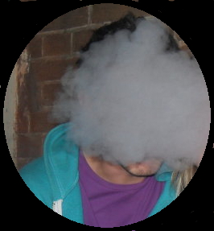

My name is Matthew Arvindale and I am the Muggle Liason Officer,
for the Bristol area. It is my responsibility to inform the local populace of
certain magical goings-on and to ensure amicable and generous spirit between our community and theirs.
16 years ago Malawi won the Quidditch World Cup, in what we know was the most fractious of times.
In the spirit of bringing communities together, the captain Kondwani Kamanga did something
unheard of - before or since. He gifted the posts from the final game to the muggle community, and asked the
opposing Senegalese captain, Mamadou Sosseh, to enchant them into place.
The historic act took place outside the Bristol Royal Hospital for Children,
but we are in terrible danger of not recognising the momentous event. As such, I propose a handsome and offical plaque
that will be dedicated to the wonderful people of Bristol, both magic and muggle. It is a shame that it has taken
13 years to be made, but then again it was made and affixed without magic. That is the muggle way!